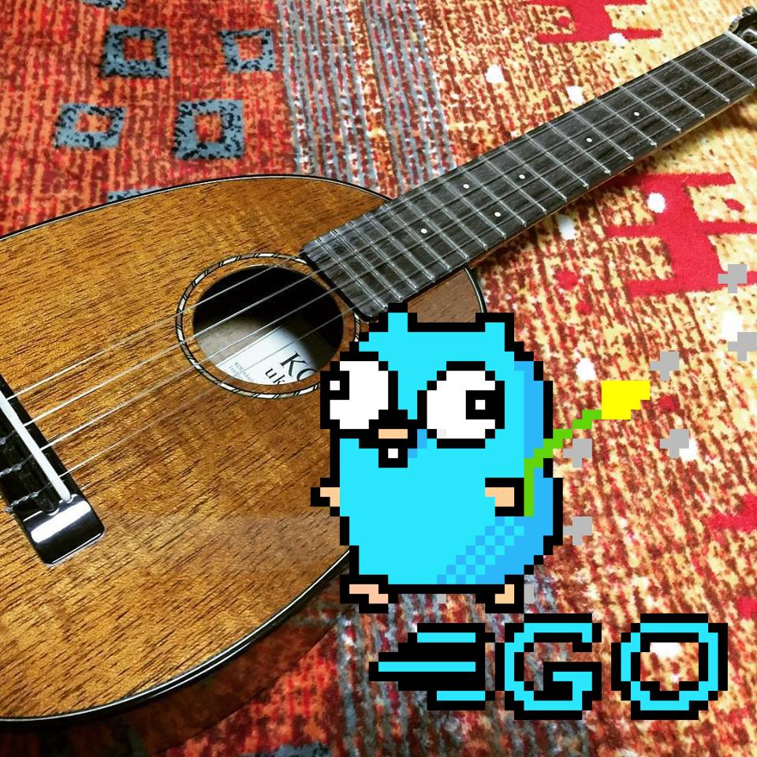

石川県金沢市在住のバックエンドエンジニアのmafuyukです。
フルスクラッチでの開発を経験したことがあるため、上流工程から下流工程まで、フロントエンドからバックエンド、クラウドインフラまでを触れます。
保守運用もやっていますがどちらかというと新規開発のほうが得意で魅力を感じています。
言語はGolangが好きですが、何にでも挑戦したいと思っています。最近はブロックチェーン技術に興味が出て休日にSolidityの学習をしてます。
その他、触ったことのある技術に関してはPRODUCTやWORKを見てみてください。
平日夜と土日にフルリモートでの副業をやったりしていますのでご興味があればCONTACTから連絡いただけると幸いです。